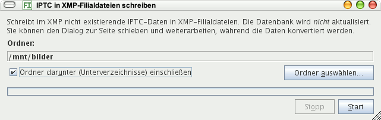

Mit diesem Menübefehl öffnen Sie einen Dialog, mit dem Sie ein Verzeichnis auswählen können, in dem alle IPTC-Datein in XMP-Filialdateien geschrieben werden solange noch keine XMP-Filialdatei für eine bestimmte Datei existiert.
